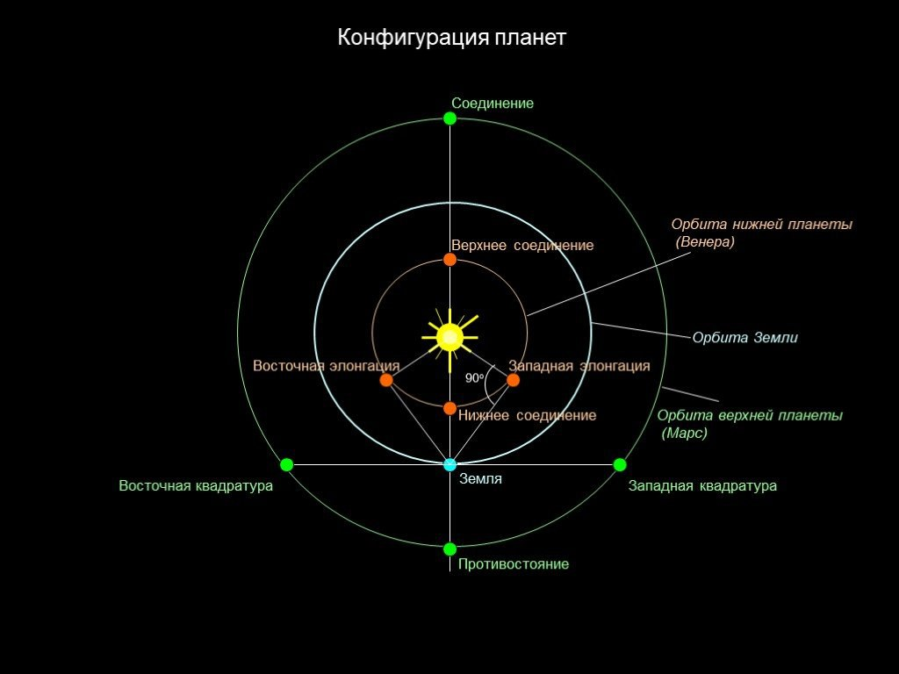
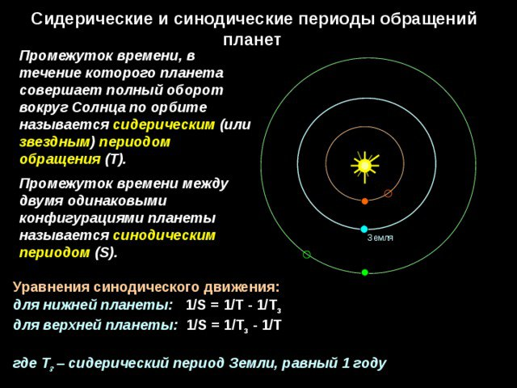
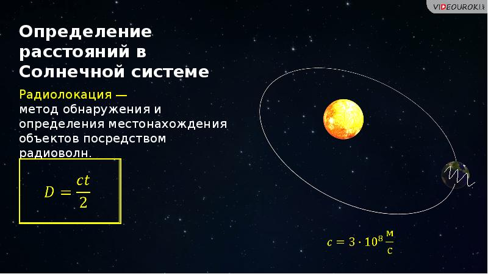
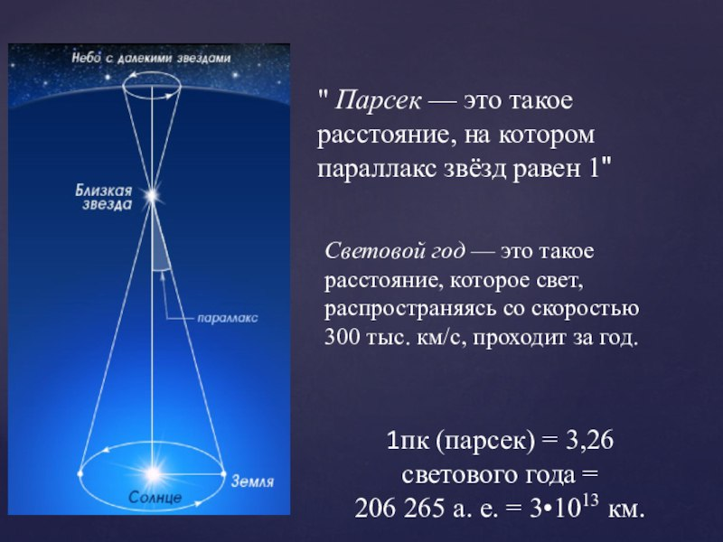

Конфигурация планет
Все планеты Солнечной системы принято разделять на нижние и верхние. Нижними называются планеты, орбиты которых расположены ближе к Солнцу, чем орбита Земли (это Меркурий и Венера). Следовательно, если орбита планеты будет находиться за орбитой Земли, то она будет называться верхней (это Марс, Юпитер, Сатурн, Уран и Нептун). Элонгацией называется такое положение планеты, при котором для земного наблюдателя её угловое расстояние от Солнца максимально. Также принято различать восточную и западную элонгации. В восточной элонгации планету можно наблюдать на небе вечером после захода Солнца, а в западной — утром перед восходом Солнца.

Синодический и сидерический период обращения планет
Промежуток времени между двумя последовательными одноименными конфигурациями планеты (например, верхними соединениями) называется её синодическим периодом. А сидерический - промежуток времени, в течение которого какое-либо небесное тело-спутник совершает вокруг главного тела полный оборот относительно звёзд.

Расстяние и размеры небесных тел
Расстояние от Земли до Солнца - 149,6 миллионов. Горизонтальным параллаксом называется угол, под которым со светила виден радиус Земли, перпендикулярный лучу зрения.

Единицы измерений в астрономии
Космические расстояния, удобнее выражать не в километрах, а в световых годах. Скорость света примерно 300.000 км/с. Астрономическая еденица (коротко а.е.) - принято принимать расстояние от Земли до Солнца, то есть 149 597 870 700 метров.
